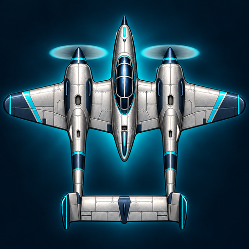
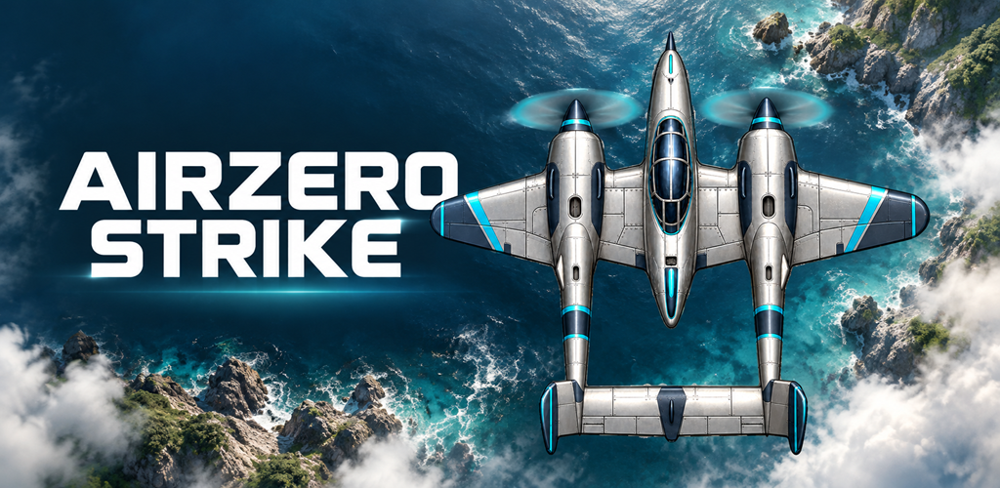

비공개 로컬 검토본 · 제출/서비스 제공 준비 미완료 · 공개 주소/접수 기능 없음
AIRZERO STRIKE 출시 자료 검토
가상 Android 앱의 실제 Flutter 무료 플레이 화면입니다. 실기기·iOS·스토어 검증 자료가 아닙니다. 아래 아이콘 마스크는 CSS 미리보기이며 실제 런처 검사와 다릅니다.
support · privacy · delete-account · terms
브랜드 후보

날개 끝이 원형에서 잘릴 수 있습니다. Android 적응형/테마 아이콘·실제 런처 및 Xcode 검토는 대기입니다. 배너는 AI 제작 브랜드 그림으로 실제 플레이 화면과 구분합니다.

실제 게임 프레임